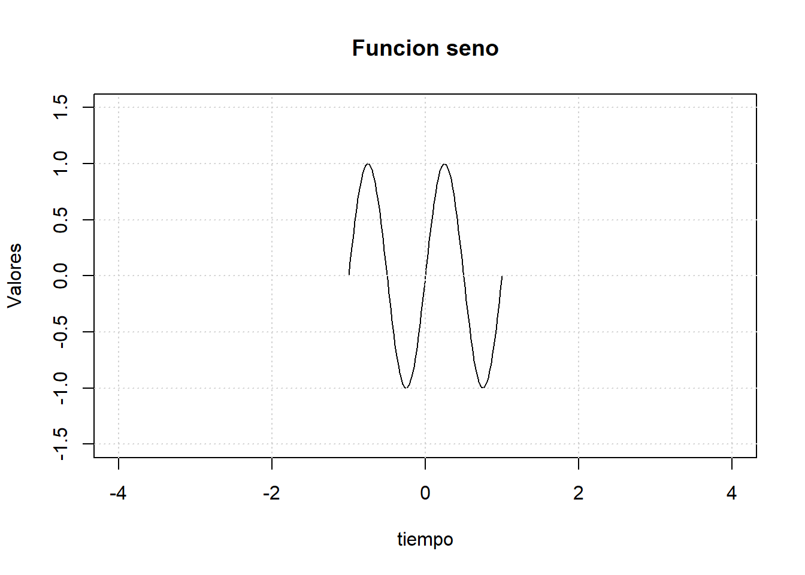

2.- ¿Qué sucede si hacemos dnormales[0:3]? ¿Cuál es la longitud del vector?
[1] -0.8969145 0.1848492 1.5878453
3
3.- Ahora suponga que x <- c(1,24,8) y uno <- c(T,T,F).
¿Qué sucede si hacemos x[uno]?
se queda solo el 1 y el 24 porque estan en la posicion de TRUE y el 8 no se imprime por estar en la posicion de FALSE
¿Y si hacemos x[as.double(uno)]?
as.double transforma los valores logicos a decimales o “num” asi que TRUE se vuelve 1 y FALSE se vuelve 0 por eso solo se imprimen dos 1 y el 0 no se imprime
x <-c(1,24,8)uno <-c(T,T,F)x[uno]
[1] 1 24
x[as.double(uno)]
[1] 1 1
Subindexado de listas
#Subindexado de listaslistaPrueba <-list(Mayusculas = LETTERS[1:15], Ciudades =c("Cancun", "Playa", "Chetumal", "Merida"), casos =list(a =23, b =1:8, c =list(d =1, e =TRUE)))str(listaPrueba)
List of 3
$ Mayusculas: chr [1:15] "A" "B" "C" "D" ...
$ Ciudades : chr [1:4] "Cancun" "Playa" "Chetumal" "Merida"
$ casos :List of 3
..$ a: num 23
..$ b: int [1:8] 1 2 3 4 5 6 7 8
..$ c:List of 2
.. ..$ d: num 1
.. ..$ e: logi TRUE
Con qué comando puedo obtener la lista casos?
con $
¿Cómo puedo obtener el único valor lógico de listaPrueba?
listaPrueba$casos$c$e
¿Qué sucede si hago listaPrueba[[3]]$c[[2]], es esto equivalente a listaPrueba$casos[[3]][[2]]? Explique
Si, son iguales, solo que diferente orden pero llegan al mismo lugar
¿Cuál es la diferencia entre listaPrueba[1] y listaPrueba[[1]]?
el de un corchete devueleve la lista que devuelve el primer elemento y el del segundo corchete entra a la lista y devuelve lo que esta adentro
¿Cómo puedo obtener el objeto "Chetumal"?
listaPrueba$Ciudades[3]
¿Cómo puedo obtener el tercer elemento de b?
listaPrueba$casos$b[3]
Indexado de matrices
#Indexado de matricesmatriz1 <-matrix(rnorm(20), nrow =5)dim(matriz1)
4.- ¿Son equivalentes los comandos matriz1[c(1,2),c(3,4)] y matriz1[1:2,c(3,4)]?
Si
#Subindexado de data.frame# 1. Cargamos la librería indispensablelibrary(dplyr)
Adjuntando el paquete: 'dplyr'
The following objects are masked from 'package:stats':
filter, lag
The following objects are masked from 'package:base':
intersect, setdiff, setequal, union
# 2. Construimos la tabla basedf <-data.frame(a =1:8, letras = letters[1:8])# 3. Comprobamos de forma aislada cada comandotabla_columnas <-select(df, a)print(tabla_columnas)
a
1 1
2 2
3 3
4 4
5 5
6 6
7 7
8 8
tabla_filas <-filter(df, a <5)print(tabla_filas)
a letras
1 1 a
2 2 b
3 3 c
4 4 d
1. ¿Para qué sirve el paquete dplyr?
R se puede expandir mediante “contributed packages” o paquetes de extensión según las necesidades particulares de análisis. dplyr es precisamente uno de ellos y sirve como una”gramática para la manipulación de datos”.
Está diseñado para trabajar específicamente sobre estructuras bidimensionales como data.frames o tibbles. Sirve para optimizar tareas de limpieza como:
Seleccionar columnas específicas de una tabla enorme.
Filtrar filas que cumplan con ciertas condiciones lógicas.
Reordenar filas basándose en los valores de sus columnas.
Crear nuevas variables o modificar las ya existentes.
Agrupar datos por categorías y calcular resúmenes estadísticos rápidamente (como promedios o desviaciones estándar).
2. ¿Cuáles son los comandos importantes del paquete dplyr?
dplyr se basa en un conjunto de “verbos” principales (funciones) que realizan las acciones más comunes sobre una base de datos. Los comandos más importantes son:
select(): Se utiliza para seleccionar o descartar columnas específicas de un data.frame.
filter(): Se utiliza para filtrar filas (observaciones) basándose en condiciones lógicas (por ejemplo, edad > 18).
arrange(): Sirve para ordenar las filas de la tabla de menor a mayor (o de mayor a menor) con respecto a los valores de una o más columnas (similar a lo que hace la función nativa order() con los vectores).
mutate(): Permite crear nuevas columnas a partir de operaciones entre columnas existentes, o modificar columnas que ya están en la tabla.
summarise() (o summarize): Se usa para reducir muchos valores a un único resumen estadístico (como calcular la media con mean(), el máximo con max(), etc.).
group_by(): Se utiliza en combinación con summarise() para agrupar los datos por una variable categórica y aplicar los cálculos a cada subgrupo por separado.
Supongamos que tenemos un data.framedf <- data.frame(a=1:8, letras =letter[1:8]), qué sucede si aplico select(df, a). ¿Y si aplico filter(df, a<5)?
para df, a solo conserva las 8 filas originales, pero unicamente la de la columna a
y para df, a<5 conserva las dos columnas originales (a y letras) pero las reduce a 4 filas
Graficos de funciones bidimensionales
Los gráficos permiten mostrar múltiples características de una función. Los máximos, mínimos, etc., son métricas que nos dicen mucho acerca del comportamiento de una función. R nos permite graficar funciones de manera sencilla utilizando el concepto de vector. Por ejemplo, quizás estemos interesados en conocer la forma de onda de la función seno acotada, la cual se define matemáticamente mediante la siguiente fórmula:
t <-seq(-1, 1, length =100)ft <-sin(2* pi * t) # Se calcula la funcion seno a partir de tplot(t, ft, type ="l", xlim =c(-4, 4), ylim =c(-1.5, 1.5), main ="Funcion seno", xlab ="tiempo", ylab ="Valores")grid()

t <-seq(-3, 3, length =200)f1 <-sin(2* pi * (t))f2 <-sin(2* pi * (t -1/4))f3 <-sin(2* pi * (t -1/2))plot(t, f1, type ="l", main ="Funcion seno y versiones", xlab ="tiempo", ylab ="Valores")grid()lines(t, f2, col ="red")points(t, f3, col ="blue")